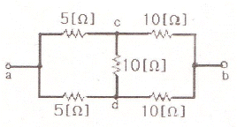
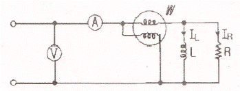
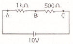
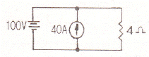
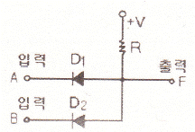
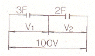
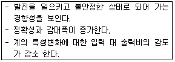
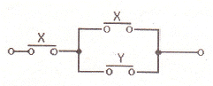
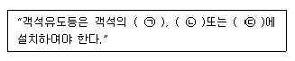

소방설비기사(전기분야) (2010-09-05 기출문제)
1과목: 소방원론
1. 제 1종 분말소화약제인 탄산수소나트륨은 어떤 색으로 착색되어 있는가?
- 백색
- 담회색
- 담홍색
- 회색
(정답률: 80%)

2. 수소의 공기 중 폭발범위에 가장 가까운 것은?
- 12.5~54vol%
- 4~75vol%
- 5~15vol%
- 1.⑤~6.7vol%
(정답률: 85%)
3. 니트로셀룰로오스에 대한 설명으로 잘못된 것은?
- 질화도가 낮을수록 위험성이 크다.
- 물을 첨가하여 습윤시켜 운반한다.
- 화약의 원료로 쓰인다.
- 고체이다.
(정답률: 75%)
4. 실내온도 15℃에서 화재가 발생하여 900℃ 가 되었다면 기체의 부피는 약 몇 배로 팽창되었는가? (단, 압력은 1기압으로 일정하다.)
- 2.23
- 4.07
- 6.45
- 8.⑤
(정답률: 69%)
5. 포소화설비의 국가화재안전기준에서 정한 표의 종류 중 저발포라 함은?
- 팽창비가 20 이하인 것
- 팽창비가 120 이하인 것
- 팽창비가 250 이하인 것
- 팽창비가 1000 이하인 것
(정답률: 74%)
6. 분자식이 CF2BrCl 인 할로겐화합물 소화약제는?
- Halon 1301
- Halon 1211
- Halon 2402
- Halon 2021
(정답률: 82%)
7. 재료와 그 특성의 연결이 옳은 것은?
- PVC 수지 - 열가소성
- 페놀수지 - 열가소성
- 폴리에틸렌 수지 - 열경화성
- 멜라민 수지 - 열가소성
(정답률: 61%)
8. 목조건물에서 화재가 최성기에 이르면 천장, 대들보등이 무너지고 강한 복사열을 발생한다. 이 때 나타낼 수 있는 최고 온도는 약 몇 ℃ 인가?
- 300
- 600
- 900
- 1300
(정답률: 76%)
9. 다음 중 표면연소에 대한 설명으로 올바른 것은?
- 목재가 산소와 결합하여 일어나는 불꽃연소 현상
- 종이가 정상적으로 화염을 내면서 연소하는 현상
- 오일이 기화하여 일어나는 연소 현상
- 코크스나 숯의 표면에서 산소와 접촉하여 일어나는 연소 현상
(정답률: 80%)
10. 물의 기화열을 이용하여 열을 흡수하는 발식으로 소화하는 방법은?
- 냉각소화
- 질식소화
- 제거소화
- 촉매소화
(정답률: 83%)
11. 건축물의 화재발생시 인간의 피난 특성으로 틀린 것은?
- 평상시 사용하는 출입구나 통로를 사용하는 경향이 있다.
- 화재의 공포감으로 인하여 빛을 피해 어두운 곳으로 몸을 숨기는 경향이 있다.
- 화염, 연기에 대한 공포감으로 발화지점의 반대방향으로 이동하는 경향이 있다.
- 화재시 최초로 행동을 개시한 사람을 따라 전체가 움직이는 경향이 있다.
(정답률: 87%)
12. 탄화칼슘이 물과 반응할 때 발생되는 기체는?
- 일산화탄소
- 아세틸렌
- 황화수소
- 수소
(정답률: 74%)
13. 건축물의 피난ㆍ방화구조 등의 기준에 관한 규칙에서 건축물의 바깥쪽으로 설치하는 피난계단의 유효너비는 몇 m 이상으로 하여야 하는가?
- 0.6
- 0.7
- 0.9
- 1.2
(정답률: 66%)
14. 탄산가스에 대한 일반적인 설명으로 옳은 것은?
- 산소와 반응시 흡열반응을 일으킨다.
- 산소와 반응하여 불연성물질을 발생시킨다.
- 산화하지 않으나 산소와는 반응한다.
- 산소와 반응하지 않는다.
(정답률: 70%)
15. 건축물에 화재가 발생하여 일정 시간이 경과하게 되면 일정 공간 안에 열과 가연성가스가 축적되고 한순간에 폭발적으로 화재가 확산되는 현상을 무엇이라 하는가?
- 보일오버현상
- 플래쉬오버현상
- 패닉현상
- 리프팅현상
(정답률: 86%)
16. 표준상태에 있는 메탄가스의 밀도는 몇 g/L 인가?
- 0.21
- 0.41
- 0.71
- 0.91
(정답률: 60%)
17. 위험물의 유별 성질이 가연성 고체인 위험물은 제 몇 류 위험물인가?
- 제1류 위험물
- 제2류 위험물
- 제3류 위험물
- 제4류 위험물
(정답률: 77%)
18. 피난계획의 일반적 원칙이 아닌 것은?
- 피난경로는 간단명료할 것
- 2 방향의 피난동선을 확보하여 둘 것
- 피난수단은 이동식 시설을 원칙으로 할 것
- 인간의 특성을 고려하여 피난계획을 세울 것
(정답률: 86%)
19. 다음 중 제4류 위험물에 적응성이 있는 것은?
- 옥내소화전설비
- 옥외소화전설비
- 봉상수소화기
- 물분무소화설비
(정답률: 69%)
20. 물의 기화열이 539cal 인 것은 어떤 의미인가?
- 0℃ 의 물 1g 이 얼음으로 변화하는데 539cal 의 열량이 필요하다.
- 0℃ 의 얼음 1g 이 물로 변화하는데 539cal 의 열량이 필요하다.
- 0℃ 의 물 1g 이 100℃ 의 물로 변화하는데 539cal 의 열량이 필요하다.
- 100℃ 의 물 1g 이 수증기로 변화하는데 539cal 의 열량이 필요하다.
(정답률: 80%)
2과목: 소방전기회로
21. 반도체의 특징으로 옳지 않은 것은?
- 진성 반도체의 경우 온도가 올라 갈수록 양(+)의 온도계수를 나타낸다.
- 열전현상, 광전현상, 홀효과 등이 심하다.
- 반도체와 금속이 접촉면이나 또는 P형, N형 반도체의 접합면에서 정류작용을 한다.
- 전류와 전압의 관계는 비직선형이다.
(정답률: 70%)
22. 전력용 반도체 소자를 스위칭의 방향성에 따라 분류할 경우 양방향 전류소자가 아닌 것은?
- DIAC
- TRIAC
- RCT
- IGBT
(정답률: 48%)
23. 다음 그림에서 ab 간의 합성저항은?

- 5[Ω]
- 7.5[Ω]
- 15[Ω]
- 30[Ω]
(정답률: 68%)
24. 계측기 접점의 불꽃 제거나 서지전압에 대한 과입력 보호용 반도체 소자는?
- 바리스터(Varistor)
- 사이리스터(Thyristor)
- 서미스터(Thermistor)
- 트랜지스터(Transistor)
(정답률: 84%)
25. 지시전기계의 일반적인 구성요소가 아닌 것은?
- 제어장치
- 제동장치
- 구동장치
- 가열장치
(정답률: 77%)
26. SCR의 양극 전류가 10A일 때 게이트, 전류를 반으로 줄이면 양극 전류는?
- 0.1[A]
- 5[A]
- 10[A]
- 20[A]
(정답률: 81%)
27. 그림과 같은 회로에서 각 계기의 지시값이 ⓥ는 180V, Ⓐ는 5A, W는 720W라면 이 회로의 무효전력은?

- 480[Var]
- 540[Var]
- 960[Var]
- 1200[Var]
(정답률: 58%)
28. 제어요소는 동작신호를 무엇으로 변환하는 요소인가?
- 조작량
- 제어량
- 비교량
- 검출량
(정답률: 67%)
29. 그림과 같은 회로에서 내부저항 1kΩ인 전압계로 단자 A, B간의 전압을 측정하면 몇 [V]인가?

- 1[V]
- 4[V]
- 5[V]
- 10[V]
(정답률: 40%)
30. 저항 3Ω과 유도리액턴스 4Ω이 직렬로 접속된 회로의 역률은?
- 0.6
- 0.8
- 0.9
- 1
(정답률: 54%)
31. 그림에서 4Ω 저항 양단에 걸리는 전압은?

- 40[V]
- 60[V]
- 100[V]
- 160[V]
(정답률: 65%)
32. 이미터 전류를 1mA 변화 시켰더니 컬렉터 전류는 0.98mA 이었다. 이 트랜지스터의 증폭율 β는?
- 0.49
- 0.98
- 1.02
- 49.0
(정답률: 42%)
33. 그림과 같은 다이오드 논리회로의 명칭은?

- NOT 회로
- AND 회로
- OR 회로
- NAND 회로
(정답률: 72%)
34. 그림과 같이 콘덴서 3F와 2F가 직렬로 접속된 회로에 전압 100V를 가하였을 때 3F 콘덴서의 단자전압 V1은?

- 30[V]
- 40[V]
- 50[V]
- 60[V]
(정답률: 48%)
35. 다음과 같은 특성을 갖는 제어계는?

- 프로세스제어
- 피드백제어
- 프로그램제어
- 추종제어
(정답률: 75%)
36. 전원전압을 일정하게 유지하기 위하여 사용되는 다이오드는?
- 보드형다이오드
- 터널다이오드
- 제너다이오드
- 바랙터다이오드
(정답률: 82%)
37. 다음 그림을 간단히 나타낸 논리식은?

- X
- Y
- X+XY
- XY
(정답률: 60%)
38. 시퀀스 제어의 문자기호와 용어가 잘못 짝지어진 것은?
- ZCT - 영상변류기
- IR - 유도전압조정기
- IM - 유도전동기
- THR - 트립지연계전기
(정답률: 62%)
39. 삼각파의 최대치가 1일 때 ㉠실효치와 ㉡평균치는?
- ㉠ 1/√2 ㉡ 2/π
- ㉠ 1/2 ㉡ π/2
- ㉠ 1/√2 ㉡ 1/(2√2)
- ㉠ 1/√3 ㉡ 1/2
(정답률: 45%)
40. 한 개의 철심코어에 두 코일이 감겨있다. 코일 1의 자기인덕턴스 L1이 160mH, 코일 2의 자기인덕턴스 L2가 250mH이고, 두 코일의 상호인덕턴스는 M이 150mH일 때 두 코일의 결합계수 k는?
- 0.33
- 0.62
- 0.75
- 0.86
(정답률: 66%)
3과목: 소방관계법규
41. 화재경계지구의 지정 등에 관한 설명으로 잘못된 것은?
- 화재경계지구는 소방본부장 또는 소방서장이 지정한다.
- 화재가 발생우려가 높거나 화재가 발생하는 경우 그로 인하여 피해가 클 것으로 예상되는 지역을 지정할 수 있다.
- 소방본부장은 화재의 예방과 경계를 위하여 필요하다고 인정하는 때에는 관계인에 대하여 소방용수시설 또는 소화기구의 설치를 명할 수 있다.
- 소방서장은 화재경계지구안의 관계인에 대하여 소방상 필요한 훈련 및 교육을 실시할 수 있다.
(정답률: 71%)
42. 소방시설 중 “화재를 진압하거나 인명구조활동을 위하여 사용하는 설비” 로 구분되는 것은?
- 피난설비
- 소화설비
- 소화용수설비
- 소화활동설비
(정답률: 78%)
43. 제1류 위험물로서 성질상 산화성고체에 해당되지 않는 것은?
- 아염소산염류
- 무기과산화물
- 중크롬산염류
- 과염소산
(정답률: 59%)
44. 소방시설 설치유지 및 안전관리에 관한 법령상 형식승인대상 소방용기계ㆍ기구에 포함되지 않는 것은?
- 구조대
- 완강기
- 공기호흡기
- 휴대용비상조명등
(정답률: 78%)
45. 소방시설설치유지 및 안전관리에 관한 법령상 소방검사자의 자격으로 알맞은 것은?
- 소방기술사 자격을 취득한 자
- 소방시설관리사 자격을 취득한 자
- 소방설비기사 자격을 취득한 자
- 소방공무원으로서 위험물기능사 자격을 취득한 자
(정답률: 42%)
46. 소방시설공사업법에서 “소방시설업”에 포함되지 않는 것은?
- 소방시설설계업
- 소방시설공사업
- 소방공사감리업
- 소방시설점검업
(정답률: 59%)
47. 중앙소방기술심의위원회의 위원의 자격으로 잘못된 것은?
- 소방시설관리사
- 석사 이상의 소방관련 학위 소지자
- 소방관련단체에서 소방관련업무에 5년 이상 종사한 자
- 대학교ㆍ연구소에서 소방과 관련된 교육 또는 연구에 3년 이상 종사한 자
(정답률: 55%)
48. 위험물안전관리법령에서 정한 게시판의 주의사항으로 잘못된 것은?
- 제2류 위험물(인화성고체 제외) : 화기주의
- 제3류 위험물 중 자연발화성물질 : 화기엄금
- 제4류 위험물 : 화기주의
- 제5류 위험물 : 화기엄금
(정답률: 69%)
49. 소방시설 등에 대한 자체점검을 실시하지 아니하거나 관리업자 등으로 하여금 정기적으로 점검하게 하지 아니한 자의 벌칙은?
- 3년 이하의 징역 또는 1천500만원 이하의 벌금
- 300만원 이하의 벌금
- 1년 이하의 징역 또는 1천만원 이하의 벌금
- 6개월 이상의 징역 또는 1천만원 이하의 벌금
(정답률: 66%)
50. 방염성능기준 이상의 실내장식물 등을 설치하여야 하는 특정소방대상물에 속하지 않는 것은?
- 숙박시설
- 노유자시설
- 운동시설로서 수영장
- 종합병원
(정답률: 72%)
51. 다음 중 연 1회이상 소방시설관리업자 또는 방화관리자로 선임된 소방시설관리사, 소방기술사가 종합정밀점검을 의무적으로 실시하여야 하는 것은?
- 옥내소화전 설비가 설치된 연면적 1천제곱미터 이상인 특정소방대상물
- 스프링클러설비가 설치된 연면적 3천제곱미터 이상인 특정소방대상물
- 물분무 등 소화설비가 설치된 연면적 5천제곱미터 이상인 특정소방대상물
- 11층 이상의 아파트
(정답률: 61%)
52. 특정소방대상물에 소방시설이 화재안전기준에 따라 설치되지 아니한 때 특정소방대상물의 관계인에게 필요한 조치를 명할 수 있는 명령권자는?
- 관할구역 구청장
- 시ㆍ도지사
- 소방본부장 또는 소방서장
- 방화관리자를 감독할 수 있는 위치에 있는 특정소방물의 관계인
(정답률: 73%)
53. 소방자동차의 출동을 방해한 자에 대한 벌칙은?(관련규정 개정전 문제로 여기서는 기존 정답인 3번을 누르면 정답 처리됩니다. 자세한 내용은 해설을 참고하세요.)
- 1년 이하의 징역 또는 1천만원 이하의 벌금
- 3년 이하의 징역 또는 2천만원 이하의 벌금
- 5년 이하의 징역 또는 3천만원 이하의 벌금
- 10년 이하의 징역 또는 5천만원 이하의 벌금
(정답률: 74%)
54. 국제구조대를 편서ㆍ운영함에 있어 국제구조대의 편성에 속하지 않는 것은?(관련 규정 개정전 문제로 기존 정답은 1번이면 여기서는 1번을 누르면 정답 처리 됩니다.)
- 운영반
- 탐색반
- 안전평가반
- 항공반
(정답률: 64%)
55. 하자보수대상 소방시설과 하자보수보증기간을 나타낸 것으로 잘못된 것은?
- 피난기구 - 2년
- 비상경보설비 - 2년
- 무선통신보조설비 - 3년
- 자동식소화기 - 3년
(정답률: 71%)
56. 위험물안전관리법상 과징금 처분에서 위험물 제조소 등에 대한 사용의 정지가 공익을 해칠 우려가 있을때, 사용정지처분에 갈음하여 얼마의 과징금을 부과할 수 있는가?
- 5천만원 이하
- 1억원 이하
- 2억원 이하
- 3억원 이하
(정답률: 41%)
57. 화재를 예방ㆍ경계하거나 진압하고 화재, 재난ㆍ재해 그밖의 위급한 상황에서의 구조ㆍ구급활동 등을 통하여 국민의 생명ㆍ신체 및 재산을 보호함으로써 공공의 안녕질서 유지와 복리증진에 이바지함을 목적으로 하는 것은?
- 소방시설설치유지 및 안전관리에 관한 법률
- 다중이용업소의 안전관리에 관한 특별법
- 소방시설공사업법
- 소방기본법
(정답률: 74%)
58. 위험물을 저장 또는 취급하는 탱크의 용적의 산정기준에서 탱크의 용량은?
- 당해 탱크의 내용적에 공간용적을 더한 용적
- 당해 탱크의 내용적에 공간용적을 뺀 용적
- 당해 탱크의 내용적에 공간용적을 곱한 용적
- 당해 탱크의 내용적을 공간용적을 나눈 용적
(정답률: 61%)
59. 옥외탱크저장소의 액체위험물탱크 중 그 용량이 얼마이상인 탱크는 기초ㆍ지반검사를 받아야 하는가?
- 10만리터 이상
- 30만리터 이상
- 50만이터 이상
- 100만리터 이상
(정답률: 54%)
60. 다음 특정소방대상물 중 노유자(老幼者)시설에 속하지 않는 것은?
- 아동관련시설
- 장애인시설
- 노인복지시설
- 정신보건시설
(정답률: 72%)
4과목: 소방전기시설의 구조 및 원리
61. 자동화재탐지설비의 감지기는 부착높이에 따라 그 설치가 제한된다. 일반적으로 부착높이가 4m미만에서부터 20m 이상에 이르기까지 광범위하게 설치할 수 있는 감지기는?
- 연기복합형감지기
- 불꽃감지기
- 차동식분포형감지기
- 보상식스포트형감지기
(정답률: 60%)
62. 지하역사의 경우 휴대용비상조명등의 설치기준으로 알맞은 것은?
- 수평거리 25m 이내마다 3개 이상 설치
- 수평거리 50m 이내마다 5개 이상 설치
- 보행거리 25m 이내마다 3개 이상 설치
- 보행거리 50m 이내마다 5개 이상 설치
(정답률: 59%)
63. 자동화재속보설비의속보기는 수동으로 동작시키는 경우 소방관서에 자동적으로 신호를 발하여 통보 하되 20초 이내에 몇 회 이상 속보할 수 있어야 하는가/
- 3회
- 4회
- 10회
- 20회
(정답률: 72%)
64. 비화재보방지와 관련하여 감지기는 분당 몇 회의 비율로 순간적인 공급전원의 차단을 반복하는 경우에 작동되지 아니 하여야 하는가?
- 2회
- 3회
- 6회
- 12회
(정답률: 31%)
65. 단독경보형 감지기는 건전지의 성능이 저하된 경우에도 음향이나 광원에 의하여 몇 시간이상 계속하여 그 경보 또는 표시를 할 수 있어야 하는가?(관련 규정 개정전 문제로 기존 정답은 3번 이었습니다. 여기서는 3번을 누르면 정답 처리 됩니다. 자세한 내용은 해설을 참고하세요.)
- 1시간
- 2시간
- 48시간
- 96시간
(정답률: 68%)
66. 금속제 지지금구를 사용하여 무선통신 보조설비의 누설동축케이블을 벽에 고정시키고자하는 경우 몇 [m]이내 마다 고정시켜야 하는가?
- 2[m]
- 3[m]
- 4[m]
- 5[m]
(정답률: 49%)
67. 경계전로의 누설전류를 자동적으로 검출하여 이를 누전경보기의 수신부에 송신하는 것은?
- 감지기
- 발신기
- 중계기
- 변류기
(정답률: 71%)
68. 유도등의 일반구조에 적합하지 않은 것은?
- 수송 중 진동 또는 충격에 의하여 장해를 받지 않도록 축전지에 배선 등을 직접 납땜하여야 한다.
- 유도등에는 점멸, 음성 또는 이와 유사한 방식 등에 의한 유도장치를 설치할 수 있다.
- 바닥에 매립되는 복도통로유도등과 객석유도등을 제외하고 유도등에는 점검용의 자동복귀형점멸기를 설치하여야 한다.
- 인출선의 길이는 전선 인출부분으로부터 150mm이상 이어야 한다.
(정답률: 53%)
69. 누전경보기의 공칭작동전류치는 얼마 이하이어야 하는가?
- 100[mA]
- 200[mA]
- 1000[mA]
- 2000[mA]
(정답률: 47%)
70. 비상벨설비의 음향장치는 정격전압의 몇 [%]의 전압에서 음향을 발할 수 있도록 하여야 하는가?
- 20[%]
- 25[%]
- 70[%]
- 80[%]
(정답률: 80%)
71. (㉠),(㉡),(㉢)에 들어갈 용어로 알맞은 것은?

- ㉠ 통로 ㉡ 바닥 ㉢ 천장
- ㉠ 통로 ㉡ 바닥 ㉢ 벽
- ㉠ 바닥 ㉡ 천장 ㉢ 벽
- ㉠ 바닥 ㉡ 통로 ㉢ 출입구
(정답률: 68%)
72. 자동화재탐지설비의 발신기 조작부에 대한 설명으로 옳은 것은?
- 작동스위치의 동작방향으로 가하는 힘이 1kg을 초과 하고 10kg이하인 범위에서 확실하게 동작되어야 한다.
- 작동스위치의 동작방향으로 가하는 힘이 2kg을 초과 하고 8kg이하인 범위에서 확실하게 동작되어야 한다.
- 작동스위치가 작동되는 경우 P형 3급 발신기는 발신기의 확인장치에 화재신호가 전송되었음을 표기하여야 한다.
- 작동스위치가 작동되는 경우 GR형 3급 발신기는 발신기의 확인장치에 화재신호가 전송되었음을 표기하여야 한다.
(정답률: 67%)
73. 전기사업자로부터 저압으로 수전하는 비상전원설비로 알맏은 것은?
- 방화구획형
- 전용배전반(1ㆍ2층)
- 큐비클형
- 옥외개방형
(정답률: 64%)
74. 감지기 중 주위의 온도 또는 연기의 량의 변화에 따라 각각 다른 전류치 또는 전압치 등의 출력을 발하는 방식은?
- 다신호식
- 아날로그식
- 2신호식
- 디지털식
(정답률: 71%)
75. 가스누설신호를 수신한 가스누설경보기의 누설등의 색 표시는?
- 적색
- 황색
- 녹색
- 청색
(정답률: 58%)
76. 비상콘센트보호함의 설치 기준으로 옳지 않는 것은?
- 보호함에는 관계인외에는 쉽게 문을 개폐할 수 없도록 잠금장치를 할 것
- 보호함 표면에 “비상콘센트” 라고 표시한 표지를 할 것
- 보호함 상부에 적색의 표시등을 설치할 것
- 비상콘센트의 보호함을 옥내소화전함 등과 접속하여 설치하는 경우에는 옥내소화전함 등의 표시등과 겸용할 수 있다,
(정답률: 70%)
77. 청각장애인용 시각경보장치는 천장의 높이가 2m이하인 경우 천장으로부터 몇 [m]이내의 장소에 설치하여야 하는가?
- 0.1[m]
- 0.15[m]
- 2.0[m]
- 2.5[m]
(정답률: 82%)
78. 비상콘센트설비의 전원 설치에 관한 설명으로 틀린 것은?
- 상용전원회로의 배선은 저압수전인 경우에는 인입개폐기의 직후에서 분기하여 전용배선으로 할 것
- 비상전원을 실내에 설치하는 때에는 그 실내에 비상조명등을 설치할 것
- 비상전원의 설치장소에 다른 장소와 방화 구획할 것
- 비상전원은 비상콘센트설비를 유효하게 10분 이상 작동 시킬 수 있는 용량으로 설치할 것
(정답률: 70%)
79. 비상조명등을 설치하지 아니하는 부분은 거실의 각 부분으로부터 하나의 출입구에 이르는 보행거리가 몇 [m]이내인 부분인가?
- 2[m]
- 5[m]
- 15[m]
- 25[m]
(정답률: 51%)
80. 피난기구의 위치를 표시하는 축광식표지의 기준으로 적합하지 않은 것은?
- 방사성물질을 사용하는 위치표지는 쉽게 파괴되지 아니하는 재질로 처리할 것
- 위치표지는 주위 조도 0 lx에서 60분간 발광 루 직선 거리 10m 떨어진 위치에서 보통시력으로 표시면의 문자 도는 화살표 등을 쉽게 식별할 수 있는 것으로 할 것
- 위치표지의 표시 면은 쉽게 변형ㆍ변질 또는 변색되지 아니할 것
- 위치표지의 표지면의 휘도는 주위 조도 0 lx에서 60분간 발광 후 70mcd/m2으로 할 것
(정답률: 61%)